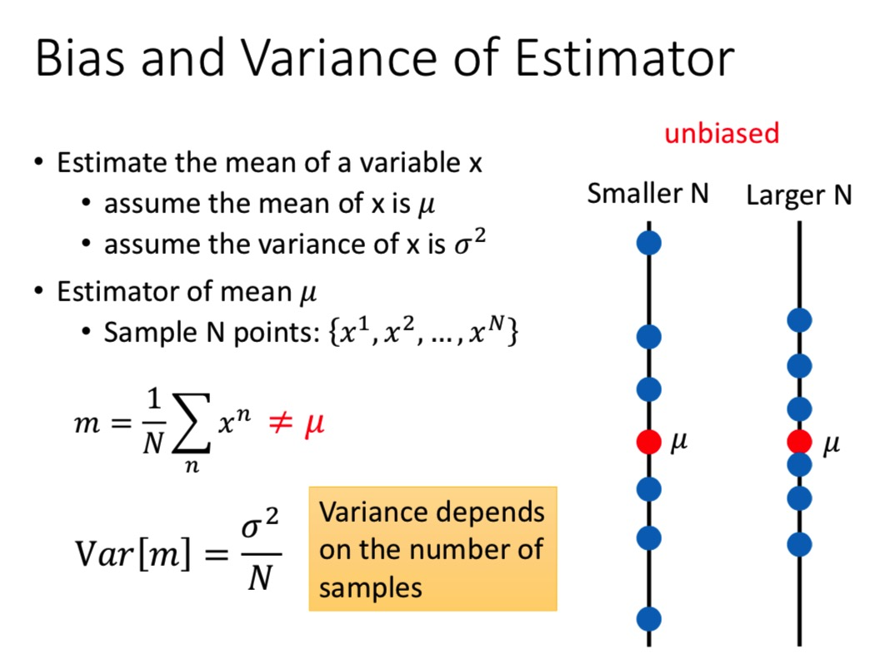
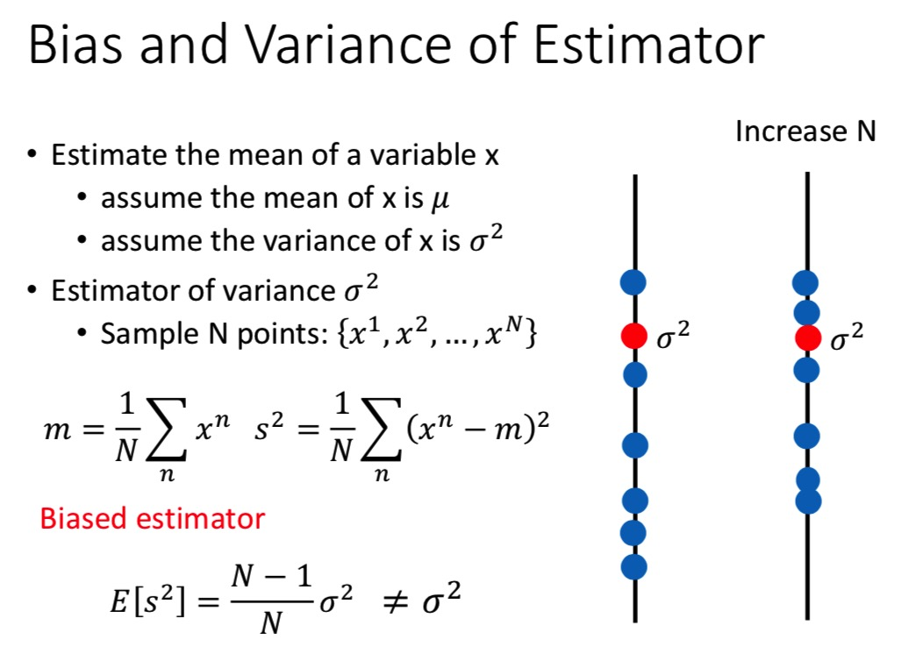
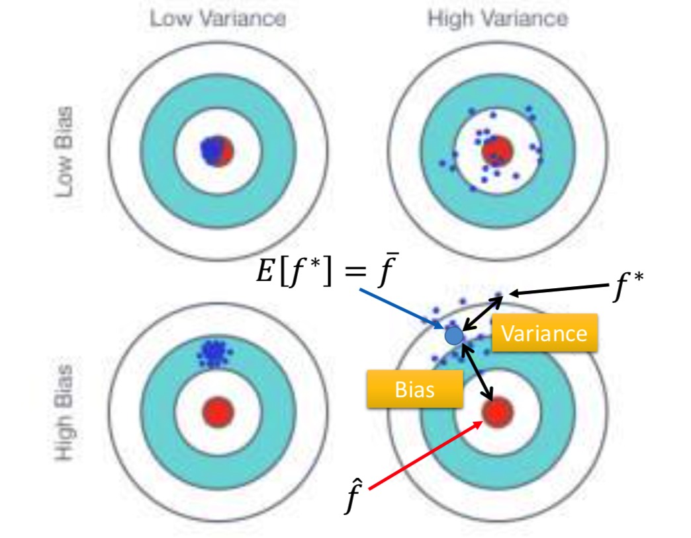
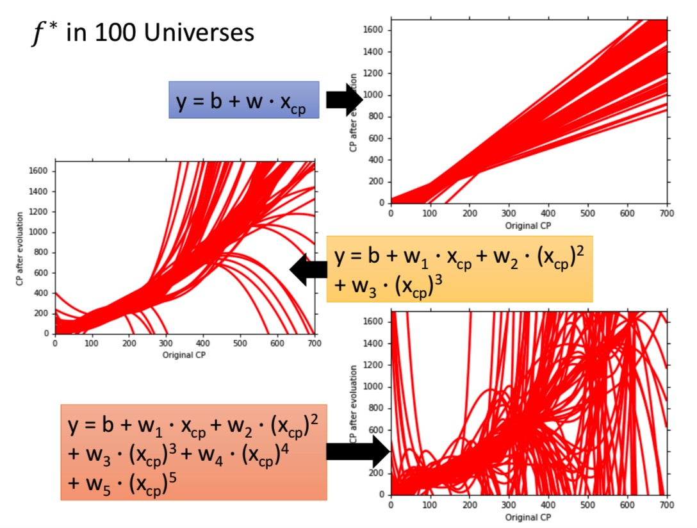
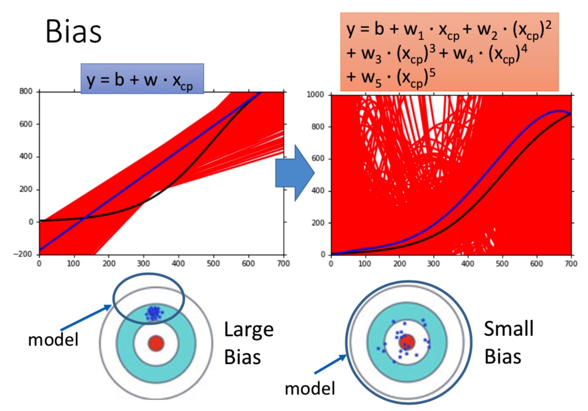
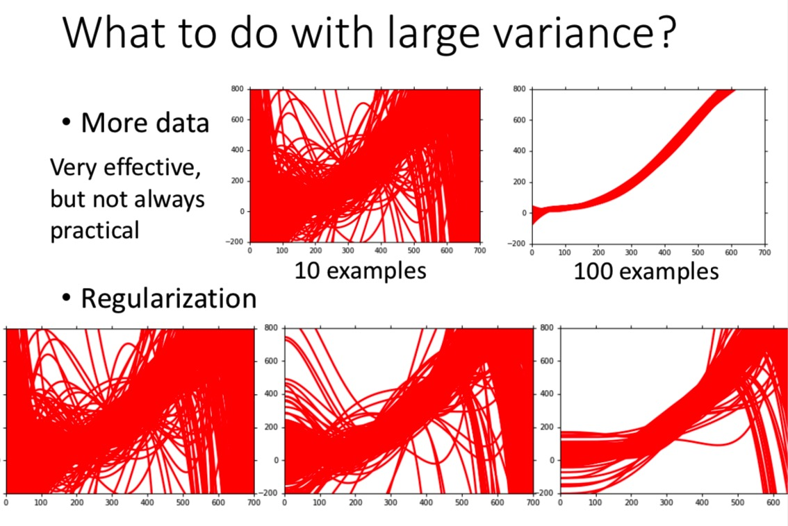
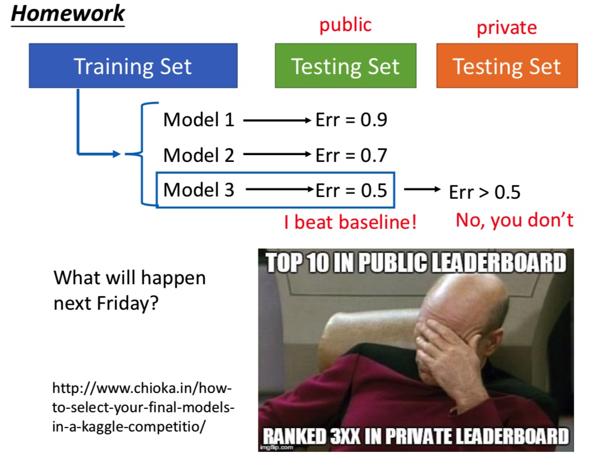
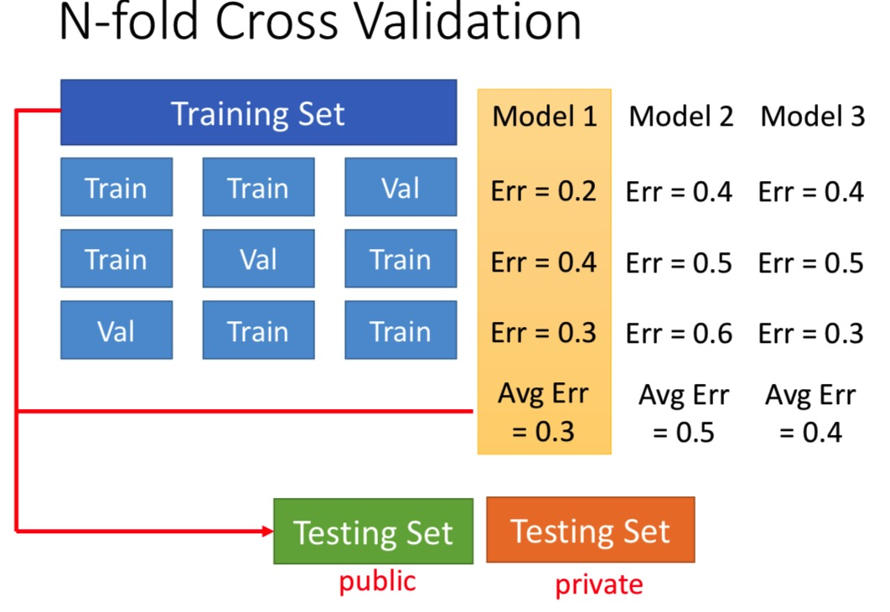

<!DOCTYPE html>


  


<html class="theme-next pisces use-motion" lang="zh-Hans">
<head>
  <!-- hexo-inject:begin --><!-- hexo-inject:end --><meta charset="UTF-8"/>
<meta http-equiv="X-UA-Compatible" content="IE=edge" />
<meta name="viewport" content="width=device-width, initial-scale=1, maximum-scale=1"/>
<meta name="theme-color" content="#222">


<meta http-equiv="Cache-Control" content="no-transform" />
<meta http-equiv="Cache-Control" content="no-siteapp" />


  
  
  <link href="/lib/fancybox/source/jquery.fancybox.css?v=2.1.5" rel="stylesheet" type="text/css" />


  
  
  
  

  
    
    
  

  
    
      
    

    
  

  

  
    
      
    

    
  

  
    
      
    

    
  

  
    
    
    <link href="//fonts.googleapis.com/css?family=Monda:300,300italic,400,400italic,700,700italic|Roboto Slab:300,300italic,400,400italic,700,700italic|Lobster Two:300,300italic,400,400italic,700,700italic|PT Mono:300,300italic,400,400italic,700,700italic&subset=latin,latin-ext" rel="stylesheet" type="text/css">
  


<link href="/lib/font-awesome/css/font-awesome.min.css?v=4.6.2" rel="stylesheet" type="text/css" />

<link href="/css/main.css?v=5.1.4" rel="stylesheet" type="text/css" />


  <link rel="apple-touch-icon" sizes="180x180" href="/images/apple-touch-icon-next.png?v=5.1.4">


  <link rel="icon" type="image/png" sizes="32x32" href="/images/favicon-32x32-next.png?v=5.1.4">


  <link rel="icon" type="image/png" sizes="16x16" href="/images/favicon-16x16-next.png?v=5.1.4">


  <link rel="mask-icon" href="/images/logo.svg?v=5.1.4" color="#222">


  <meta name="keywords" content="Machine Learning,李宏毅,Bias,Variance," />


<meta name="description" content="如何分析error来自哪里？是bias偏大，还是variance偏大？分别如何解决？最后，使用N折交叉验证来选择模型。">
<meta name="keywords" content="Machine Learning,李宏毅,Bias,Variance">
<meta property="og:type" content="article">
<meta property="og:title" content="李宏毅机器学习2017学习笔记:2.Bias and Variance">
<meta property="og:url" content="http://yoursite.com/2018/03/26/李宏毅机器学习2017学习笔记-2-Bias-and-Variance/index.html">
<meta property="og:site_name" content="Neil&#39;s Blog">
<meta property="og:description" content="如何分析error来自哪里？是bias偏大，还是variance偏大？分别如何解决？最后，使用N折交叉验证来选择模型。">
<meta property="og:locale" content="zh-Hans">
<meta property="og:image" content="http://yoursite.com/2018/03/26/李宏毅机器学习2017学习笔记-2-Bias-and-Variance/bias_of_estimator.jpg">
<meta property="og:image" content="http://yoursite.com/2018/03/26/李宏毅机器学习2017学习笔记-2-Bias-and-Variance/variance_of_estimator.jpg">
<meta property="og:image" content="http://yoursite.com/2018/03/26/李宏毅机器学习2017学习笔记-2-Bias-and-Variance/bias&variance_of_estimator.jpg">
<meta property="og:image" content="http://yoursite.com/2018/03/26/李宏毅机器学习2017学习笔记-2-Bias-and-Variance/100f_star.jpg">
<meta property="og:image" content="http://yoursite.com/2018/03/26/李宏毅机器学习2017学习笔记-2-Bias-and-Variance/5000f_star.jpg">
<meta property="og:image" content="http://yoursite.com/2018/03/26/李宏毅机器学习2017学习笔记-2-Bias-and-Variance/large_variance.jpg">
<meta property="og:image" content="http://yoursite.com/2018/03/26/李宏毅机器学习2017学习笔记-2-Bias-and-Variance/directly_select_model.jpg">
<meta property="og:image" content="http://yoursite.com/2018/03/26/李宏毅机器学习2017学习笔记-2-Bias-and-Variance/n_fold_cv.jpg">
<meta property="og:updated_time" content="2018-03-26T12:29:58.000Z">
<meta name="twitter:card" content="summary">
<meta name="twitter:title" content="李宏毅机器学习2017学习笔记:2.Bias and Variance">
<meta name="twitter:description" content="如何分析error来自哪里？是bias偏大，还是variance偏大？分别如何解决？最后，使用N折交叉验证来选择模型。">
<meta name="twitter:image" content="http://yoursite.com/2018/03/26/李宏毅机器学习2017学习笔记-2-Bias-and-Variance/bias_of_estimator.jpg">


<script type="text/javascript" id="hexo.configurations">
  var NexT = window.NexT || {};
  var CONFIG = {
    root: '/',
    scheme: 'Pisces',
    version: '5.1.4',
    sidebar: {"position":"left","display":"post","offset":12,"b2t":false,"scrollpercent":false,"onmobile":false},
    fancybox: true,
    tabs: true,
    motion: {"enable":true,"async":false,"transition":{"post_block":"fadeIn","post_header":"slideDownIn","post_body":"slideDownIn","coll_header":"slideLeftIn","sidebar":"slideUpIn"}},
    duoshuo: {
      userId: '0',
      author: '博主'
    },
    algolia: {
      applicationID: '',
      apiKey: '',
      indexName: '',
      hits: {"per_page":10},
      labels: {"input_placeholder":"Search for Posts","hits_empty":"We didn't find any results for the search: ${query}","hits_stats":"${hits} results found in ${time} ms"}
    }
  };
</script>


  <link rel="canonical" href="http://yoursite.com/2018/03/26/李宏毅机器学习2017学习笔记-2-Bias-and-Variance/"/>


  <title>李宏毅机器学习2017学习笔记:2.Bias and Variance | Neil's Blog</title><!-- hexo-inject:begin --><!-- hexo-inject:end -->
  


</head>

<body itemscope itemtype="http://schema.org/WebPage" lang="zh-Hans">

  
  
    
  

  <!-- hexo-inject:begin --><!-- hexo-inject:end --><div class="container sidebar-position-left page-post-detail">
    <div class="headband"></div>

    <header id="header" class="header" itemscope itemtype="http://schema.org/WPHeader">
      <div class="header-inner"><div class="site-brand-wrapper">
  <div class="site-meta ">
    

    <div class="custom-logo-site-title">
      <a href="/"  class="brand" rel="start">
        <span class="logo-line-before"><i></i></span>
        <span class="site-title">Neil's Blog</span>
        <span class="logo-line-after"><i></i></span>
      </a>
    </div>
      
        <p class="site-subtitle"></p>
      
  </div>

  <div class="site-nav-toggle">
    <button>
      <span class="btn-bar"></span>
      <span class="btn-bar"></span>
      <span class="btn-bar"></span>
    </button>
  </div>
</div>

<nav class="site-nav">
  

  
    <ul id="menu" class="menu">
      
        
        <li class="menu-item menu-item-home">
          <a href="/" rel="section">
            
              <i class="menu-item-icon fa fa-fw fa-home"></i> <br />
            
            首页
          </a>
        </li>
      
        
        <li class="menu-item menu-item-tags">
          <a href="/tags/" rel="section">
            
              <i class="menu-item-icon fa fa-fw fa-tags"></i> <br />
            
            标签
          </a>
        </li>
      
        
        <li class="menu-item menu-item-categories">
          <a href="/categories/" rel="section">
            
              <i class="menu-item-icon fa fa-fw fa-th"></i> <br />
            
            分类
          </a>
        </li>
      
        
        <li class="menu-item menu-item-archives">
          <a href="/archives/" rel="section">
            
              <i class="menu-item-icon fa fa-fw fa-archive"></i> <br />
            
            归档
          </a>
        </li>
      

      
        <li class="menu-item menu-item-search">
          
            <a href="javascript:;" class="popup-trigger">
          
            
              <i class="menu-item-icon fa fa-search fa-fw"></i> <br />
            
            搜索
          </a>
        </li>
      
    </ul>
  

  
    <div class="site-search">
      
  <div class="popup search-popup local-search-popup">
  <div class="local-search-header clearfix">
    <span class="search-icon">
      <i class="fa fa-search"></i>
    </span>
    <span class="popup-btn-close">
      <i class="fa fa-times-circle"></i>
    </span>
    <div class="local-search-input-wrapper">
      <input autocomplete="off"
             placeholder="搜索..." spellcheck="false"
             type="text" id="local-search-input">
    </div>
  </div>
  <div id="local-search-result"></div>
</div>


    </div>
  
</nav>


 </div>
    </header>

    <main id="main" class="main">
      <div class="main-inner">
        <div class="content-wrap">
          <div id="content" class="content">
            

  <div id="posts" class="posts-expand">
    

  

  
  
  

  <article class="post post-type-normal" itemscope itemtype="http://schema.org/Article">
  
  
  
  <div class="post-block">
    <link itemprop="mainEntityOfPage" href="http://yoursite.com/2018/03/26/李宏毅机器学习2017学习笔记-2-Bias-and-Variance/">

    <span hidden itemprop="author" itemscope itemtype="http://schema.org/Person">
      <meta itemprop="name" content="Neil Xu">
      <meta itemprop="description" content="">
      <meta itemprop="image" content="/images/avatar.gif">
    </span>

    <span hidden itemprop="publisher" itemscope itemtype="http://schema.org/Organization">
      <meta itemprop="name" content="Neil's Blog">
    </span>

    
      <header class="post-header">

        
        
          <h1 class="post-title" itemprop="name headline">李宏毅机器学习2017学习笔记:2.Bias and Variance</h1>
        

        <div class="post-meta">
          <span class="post-time">
            
              <span class="post-meta-item-icon">
                <i class="fa fa-calendar-o"></i>
              </span>
              
                <span class="post-meta-item-text">发表于</span>
              
              <time title="创建于" itemprop="dateCreated datePublished" datetime="2018-03-26T20:29:58+08:00">
                2018-03-26
              </time>
            

            

            
          </span>

          
            <span class="post-category" >
            
              <span class="post-meta-divider">|</span>
            
              <span class="post-meta-item-icon">
                <i class="fa fa-folder-o"></i>
              </span>
              
                <span class="post-meta-item-text">分类于</span>
              
              
                <span itemprop="about" itemscope itemtype="http://schema.org/Thing">
                  <a href="/categories/Machine-Learning/" itemprop="url" rel="index">
                    <span itemprop="name">Machine Learning</span>
                  </a>
                </span>

                
                
              
            </span>
          

          
            
              <span class="post-comments-count">
                <span class="post-meta-divider">|</span>
                <span class="post-meta-item-icon">
                  <i class="fa fa-comment-o"></i>
                </span>
                <a href="/2018/03/26/李宏毅机器学习2017学习笔记-2-Bias-and-Variance/#comments" itemprop="discussionUrl">
                  <span class="post-comments-count disqus-comment-count"
                        data-disqus-identifier="2018/03/26/李宏毅机器学习2017学习笔记-2-Bias-and-Variance/" itemprop="commentCount"></span>
                </a>
              </span>
            
          

          
          

          

          

          
              <div class="post-description">
                  如何分析error来自哪里？是bias偏大，还是variance偏大？分别如何解决？最后，使用N折交叉验证来选择模型。
              </div>
          

        </div>
      </header>
    

    
    
    
    <div class="post-body" itemprop="articleBody">

      
      

      
        <h1 id="Error来自哪里？"><a href="#Error来自哪里？" class="headerlink" title="Error来自哪里？"></a>Error来自哪里？</h1><ul>
<li>来自于bias</li>
<li>来自于variance</li>
</ul>
<h1 id="Estimator-估计量"><a href="#Estimator-估计量" class="headerlink" title="Estimator(估计量)"></a>Estimator(估计量)</h1><p>在估计宝可梦的CP值的例子中，正确的函数为 $\hat f$ ，这个我们无法知道。</p>
<p>我们只能从训练数据中学到一个最好的函数 $f^\ast$ .所以，$f^\ast$ 是 $\hat f$的一个estimator。</p>
<h2 id="『估计量』-的-Bia-和-Variance"><a href="#『估计量』-的-Bia-和-Variance" class="headerlink" title="『估计量』 的 Bia 和 Variance"></a>『估计量』 的 Bia 和 Variance</h2><p>假设有一个变量$x$，满足：$x$的均值为$\mu$，均方差为$\sigma^2$。</p>
<h3 id="如何估计均值-mu-呢？"><a href="#如何估计均值-mu-呢？" class="headerlink" title="如何估计均值$\mu$呢？"></a>如何估计均值$\mu$呢？</h3><p>取<code>N</code>个点：${x^1, x^2,…,x^N}$<br><code>N</code>个点取均值，结果不会等于$\mu$，当<code>N</code>无限大时，均值会无限接近$\mu$：<br>$$ m = \frac 1 N \sum_n x^n \neq \mu $$<br>虽然每个$m$与$\mu$都不相等，但是$m$的期望等于均值$\mu$。<br>所以用$m$来估计$\mu$，是<strong>无偏</strong>的。<br>$$ E[m] = E \left[\frac 1 N \sum_n x^n \right] = \frac 1 N \sum_n E[x^n] = \mu $$</p>
<p>就像打靶的时候，瞄的点是$\mu$，但是由于风、肌肉抖动等的影响，实际打中的地方会散布在瞄的$\mu$的周围。</p>
<p>散布得多散，取决于$m$的方差：<br>$$ Var(m) = \frac {\sigma^2} N $$</p>
<p>$m$的方差取决于样本的数量：</p>
<ul>
<li>当<code>N</code>比较小时，散布比较开；</li>
<li>当<code>N</code>比较大时，散布比较紧。<br></li>
</ul>
<h3 id="如何估计均方差-sigma-2-呢？"><a href="#如何估计均方差-sigma-2-呢？" class="headerlink" title="如何估计均方差$\sigma^2$呢？"></a>如何估计均方差$\sigma^2$呢？</h3><p>$s^2$表示：<br>$$ s^2 = \frac 1 N \sum_n (x^n - m)^2 $$<br>用$s^2$来估计均方差，是<strong>有偏</strong>的：<br>$$ E[s^2] = \frac {N-1} N \sigma^2 \neq \sigma^2 $$<br>当<code>N</code>很大时，$s^2$的期望会很接近$\sigma^2$.<br></p>
<h3 id="小结"><a href="#小结" class="headerlink" title="小结"></a>小结</h3><p>我们的目标是估测靶的中心$\hat f$，对<code>N</code>组数据分别估测<code>N</code>个$f ^\ast$.</p>
<ul>
<li>每个$f^\ast$与$\hat f$之间存在误差，这个误差来自于%E[f\ast]%与$\hat f$的bias;</li>
<li>另外一个误差来自于$f^\ast$与$\overline f$的variance.</li>
</ul>
<p></p>
<p><strong>Note：</strong>如何得到多个$f^\ast$呢？在不同的数据集上估计$f$。</p>
<p>举例：<br>分别用以下3种模型，学习100次，得到多个$f^\ast$，画图如下：<br><br>从图中可以看到：</p>
<ul>
<li>从上到下，模型的复杂程度越来越高；</li>
<li>简单的模型散步得很紧密，复杂的模型散布得比较开；</li>
<li>简单的模型受到数据(x)的影响较小（最极端的例子$f(x)=c$，最简单的模型，完全不受数据影响）。</li>
</ul>
<p>对5000个 $f^\ast$ 求平均，画出来的蓝色线如下图：<br><strong>比较bias：</strong></p>
<ul>
<li>左边的模型比较简单，求平均之后离 $\hat f$ 较远，bias较大；</li>
<li>右边的模型比较复杂，求平均之后离 $\hat f$ 较近，bias较小。</li>
</ul>
<p><strong>比较variance：</strong></p>
<ul>
<li>左边的模型输出值均在 $\hat f$ 附近，variance较小；</li>
<li>右边的模型输出值散布较开，variance较大。<br></li>
</ul>
<h1 id="如何处理bias偏大的情况？"><a href="#如何处理bias偏大的情况？" class="headerlink" title="如何处理bias偏大的情况？"></a>如何处理bias偏大的情况？</h1><p>分析方法：</p>
<ul>
<li>如果模型不能很好地拟合训练数据，说明bias很大。【欠拟合】</li>
<li>如果模型能拟合训练数据，但是在测试数据上误差较大，那么很可能variance很大。【过拟合】</li>
</ul>
<p>如果是bais很大，那么需要使模型更加复杂：</p>
<ul>
<li>加更多的特征</li>
<li>用更加复杂的模型</li>
</ul>
<p>如果是variance很大，那么：</p>
<ul>
<li>收集更大的模型。如下图，100个样本训练的模型比10个样本训练的模型散布更加紧凑。</li>
<li>正则化。如下图，从左往右，正则项系数逐渐增大。<br></li>
</ul>
<h1 id="如何选择模型？【交叉验证】"><a href="#如何选择模型？【交叉验证】" class="headerlink" title="如何选择模型？【交叉验证】"></a>如何选择模型？【交叉验证】</h1><p>作业提供了一个训练集和公开的测试集，提交作业的时候，需要在私有的测试集上对提交的结果进行测试。</p>
<p>如果在训练集上训练了3个模型，在测试集上，『Model 3』 的 Error=0.5 最小，于是将『Model 3』的结果提交上去，结果Error&gt;0.5。怎么办？<br></p>
<p><strong>N折交叉验证</strong><br>使用『N折交叉验证』来选择最优的模型，过程如下。</p>
<ol>
<li>将训练集分成<code>N</code>份；</li>
<li>对于每个模型而言，依次将第<code>i</code>份拿出来作验证，在其他的<code>N-1</code>数据上训练，得到<code>N</code>个训练误差。求平均，得到平均训练误差；</li>
<li>对于多个训练模型而言，取平均训练误差最小的模型。<br></li>
</ol>
<h1 id="总结"><a href="#总结" class="headerlink" title="总结"></a>总结</h1><ol>
<li>如果在训练集上误差较大，那么bias较大，说明是欠拟合。考虑增加特征，或者换更复杂的模型；</li>
<li>如果在训练集上误差较小，在测试集上误差较大，过拟合。考虑收集更多的数据，或者采用正则化。</li>
<li>多个候选模型之间如何选择？采用N折交叉验证。</li>
</ol>

      
    </div>
    
    
    

    

    

    

    <footer class="post-footer">
      
        <div class="post-tags">
          
            <a href="/tags/Machine-Learning/" rel="tag"># Machine Learning</a>
          
            <a href="/tags/李宏毅/" rel="tag"># 李宏毅</a>
          
            <a href="/tags/Bias/" rel="tag"># Bias</a>
          
            <a href="/tags/Variance/" rel="tag"># Variance</a>
          
        </div>
      

      
      
      

      
        <div class="post-nav">
          <div class="post-nav-next post-nav-item">
            
              <a href="/2018/03/26/李宏毅机器学习2017学习笔记-1-Regression-Demo/" rel="next" title="李宏毅机器学习2017学习笔记:1.Regression Demo">
                <i class="fa fa-chevron-left"></i> 李宏毅机器学习2017学习笔记:1.Regression Demo
              </a>
            
          </div>

          <span class="post-nav-divider"></span>

          <div class="post-nav-prev post-nav-item">
            
              <a href="/2018/03/28/李宏毅机器学习2017学习笔记-3-1-Gradient-Descent/" rel="prev" title="李宏毅机器学习2017学习笔记:3-1.Gradient Descent">
                李宏毅机器学习2017学习笔记:3-1.Gradient Descent <i class="fa fa-chevron-right"></i>
              </a>
            
          </div>
        </div>
      

      
      
    </footer>
  </div>
  
  
  
  </article>


    <div class="post-spread">
      
    </div>
  </div>


          </div>
          


          

  
    <div class="comments" id="comments">
      <div id="disqus_thread">
        <noscript>
          Please enable JavaScript to view the
          <a href="https://disqus.com/?ref_noscript">comments powered by Disqus.</a>
        </noscript>
      </div>
    </div>

  


        </div>
        
          
  
  <div class="sidebar-toggle">
    <div class="sidebar-toggle-line-wrap">
      <span class="sidebar-toggle-line sidebar-toggle-line-first"></span>
      <span class="sidebar-toggle-line sidebar-toggle-line-middle"></span>
      <span class="sidebar-toggle-line sidebar-toggle-line-last"></span>
    </div>
  </div>

  <aside id="sidebar" class="sidebar">
    
    <div class="sidebar-inner">

      

      
        <ul class="sidebar-nav motion-element">
          <li class="sidebar-nav-toc sidebar-nav-active" data-target="post-toc-wrap">
            文章目录
          </li>
          <li class="sidebar-nav-overview" data-target="site-overview-wrap">
            站点概览
          </li>
        </ul>
      

      <section class="site-overview-wrap sidebar-panel">
        <div class="site-overview">
          <div class="site-author motion-element" itemprop="author" itemscope itemtype="http://schema.org/Person">
            
              <p class="site-author-name" itemprop="name">Neil Xu</p>
              <p class="site-description motion-element" itemprop="description"></p>
          </div>

          <nav class="site-state motion-element">

            
              <div class="site-state-item site-state-posts">
              
                <a href="/archives/">
              
                  <span class="site-state-item-count">10</span>
                  <span class="site-state-item-name">日志</span>
                </a>
              </div>
            

            
              
              
              <div class="site-state-item site-state-categories">
                <a href="/categories/index.html">
                  <span class="site-state-item-count">5</span>
                  <span class="site-state-item-name">分类</span>
                </a>
              </div>
            

            
              
              
              <div class="site-state-item site-state-tags">
                <a href="/tags/index.html">
                  <span class="site-state-item-count">16</span>
                  <span class="site-state-item-name">标签</span>
                </a>
              </div>
            

          </nav>

          

          
            <div class="links-of-author motion-element">
                
                  <span class="links-of-author-item">
                    <a href="https://github.com/NoNeil" target="_blank" title="GitHub">
                      
                        <i class="fa fa-fw fa-github"></i>GitHub</a>
                  </span>
                
                  <span class="links-of-author-item">
                    <a href="https://weibo.com/drneil" target="_blank" title="微博">
                      
                        <i class="fa fa-fw fa-weibo"></i>微博</a>
                  </span>
                
            </div>
          

          
          

          
          

          

        </div>
      </section>

      
      <!--noindex-->
        <section class="post-toc-wrap motion-element sidebar-panel sidebar-panel-active">
          <div class="post-toc">

            
              
            

            
              <div class="post-toc-content"><ol class="nav"><li class="nav-item nav-level-1"><a class="nav-link" href="#Error来自哪里？"><span class="nav-number">1.</span> <span class="nav-text">Error来自哪里？</span></a></li><li class="nav-item nav-level-1"><a class="nav-link" href="#Estimator-估计量"><span class="nav-number">2.</span> <span class="nav-text">Estimator(估计量)</span></a><ol class="nav-child"><li class="nav-item nav-level-2"><a class="nav-link" href="#『估计量』-的-Bia-和-Variance"><span class="nav-number">2.1.</span> <span class="nav-text">『估计量』 的 Bia 和 Variance</span></a><ol class="nav-child"><li class="nav-item nav-level-3"><a class="nav-link" href="#如何估计均值-mu-呢？"><span class="nav-number">2.1.1.</span> <span class="nav-text">如何估计均值$\mu$呢？</span></a></li><li class="nav-item nav-level-3"><a class="nav-link" href="#如何估计均方差-sigma-2-呢？"><span class="nav-number">2.1.2.</span> <span class="nav-text">如何估计均方差$\sigma^2$呢？</span></a></li><li class="nav-item nav-level-3"><a class="nav-link" href="#小结"><span class="nav-number">2.1.3.</span> <span class="nav-text">小结</span></a></li></ol></li></ol></li><li class="nav-item nav-level-1"><a class="nav-link" href="#如何处理bias偏大的情况？"><span class="nav-number">3.</span> <span class="nav-text">如何处理bias偏大的情况？</span></a></li><li class="nav-item nav-level-1"><a class="nav-link" href="#如何选择模型？【交叉验证】"><span class="nav-number">4.</span> <span class="nav-text">如何选择模型？【交叉验证】</span></a></li><li class="nav-item nav-level-1"><a class="nav-link" href="#总结"><span class="nav-number">5.</span> <span class="nav-text">总结</span></a></li></ol></div>
            

          </div>
        </section>
      <!--/noindex-->
      

      

    </div>
  </aside>


        
      </div>
    </main>

    <footer id="footer" class="footer">
      <div class="footer-inner">
        <div class="copyright">&copy; <span itemprop="copyrightYear">2018</span>
  <span class="with-love">
    <i class="fa fa-user"></i>
  </span>
  <span class="author" itemprop="copyrightHolder">Neil Xu</span>

  
</div>


  <div class="powered-by">由 <a class="theme-link" target="_blank" href="https://hexo.io">Hexo</a> 强力驱动</div>


  <span class="post-meta-divider">|</span>


  <div class="theme-info">主题 &mdash; <a class="theme-link" target="_blank" href="https://github.com/iissnan/hexo-theme-next">NexT.Pisces</a> v5.1.4</div>


        


        
      </div>
    </footer>

    
      <div class="back-to-top">
        <i class="fa fa-arrow-up"></i>
        
      </div>
    

    

  </div>

  

<script type="text/javascript">
  if (Object.prototype.toString.call(window.Promise) !== '[object Function]') {
    window.Promise = null;
  }
</script>


  


  
  
    <script type="text/javascript" src="/lib/jquery/index.js?v=2.1.3"></script>
  

  
  
    <script type="text/javascript" src="/lib/fastclick/lib/fastclick.min.js?v=1.0.6"></script>
  

  
  
    <script type="text/javascript" src="/lib/jquery_lazyload/jquery.lazyload.js?v=1.9.7"></script>
  

  
  
    <script type="text/javascript" src="/lib/velocity/velocity.min.js?v=1.2.1"></script>
  

  
  
    <script type="text/javascript" src="/lib/velocity/velocity.ui.min.js?v=1.2.1"></script>
  

  
  
    <script type="text/javascript" src="/lib/fancybox/source/jquery.fancybox.pack.js?v=2.1.5"></script>
  


  


  <script type="text/javascript" src="/js/src/utils.js?v=5.1.4"></script>

  <script type="text/javascript" src="/js/src/motion.js?v=5.1.4"></script>


  
  


  <script type="text/javascript" src="/js/src/affix.js?v=5.1.4"></script>

  <script type="text/javascript" src="/js/src/schemes/pisces.js?v=5.1.4"></script>


  
  <script type="text/javascript" src="/js/src/scrollspy.js?v=5.1.4"></script>
<script type="text/javascript" src="/js/src/post-details.js?v=5.1.4"></script>


  


  <script type="text/javascript" src="/js/src/bootstrap.js?v=5.1.4"></script>


  


  

    
      <script id="dsq-count-scr" src="https://neilxu.disqus.com/count.js" async></script>
    

    
      <script type="text/javascript">
        var disqus_config = function () {
          this.page.url = 'http://yoursite.com/2018/03/26/李宏毅机器学习2017学习笔记-2-Bias-and-Variance/';
          this.page.identifier = '2018/03/26/李宏毅机器学习2017学习笔记-2-Bias-and-Variance/';
          this.page.title = '李宏毅机器学习2017学习笔记:2.Bias and Variance';
        };
        var d = document, s = d.createElement('script');
        s.src = 'https://neilxu.disqus.com/embed.js';
        s.setAttribute('data-timestamp', '' + +new Date());
        (d.head || d.body).appendChild(s);
      </script>
    

  


	


  


  

  <script type="text/javascript">
    // Popup Window;
    var isfetched = false;
    var isXml = true;
    // Search DB path;
    var search_path = "search.xml";
    if (search_path.length === 0) {
      search_path = "search.xml";
    } else if (/json$/i.test(search_path)) {
      isXml = false;
    }
    var path = "/" + search_path;
    // monitor main search box;

    var onPopupClose = function (e) {
      $('.popup').hide();
      $('#local-search-input').val('');
      $('.search-result-list').remove();
      $('#no-result').remove();
      $(".local-search-pop-overlay").remove();
      $('body').css('overflow', '');
    }

    function proceedsearch() {
      $("body")
        .append('<div class="search-popup-overlay local-search-pop-overlay"></div>')
        .css('overflow', 'hidden');
      $('.search-popup-overlay').click(onPopupClose);
      $('.popup').toggle();
      var $localSearchInput = $('#local-search-input');
      $localSearchInput.attr("autocapitalize", "none");
      $localSearchInput.attr("autocorrect", "off");
      $localSearchInput.focus();
    }

    // search function;
    var searchFunc = function(path, search_id, content_id) {
      'use strict';

      // start loading animation
      $("body")
        .append('<div class="search-popup-overlay local-search-pop-overlay">' +
          '<div id="search-loading-icon">' +
          '<i class="fa fa-spinner fa-pulse fa-5x fa-fw"></i>' +
          '</div>' +
          '</div>')
        .css('overflow', 'hidden');
      $("#search-loading-icon").css('margin', '20% auto 0 auto').css('text-align', 'center');

      $.ajax({
        url: path,
        dataType: isXml ? "xml" : "json",
        async: true,
        success: function(res) {
          // get the contents from search data
          isfetched = true;
          $('.popup').detach().appendTo('.header-inner');
          var datas = isXml ? $("entry", res).map(function() {
            return {
              title: $("title", this).text(),
              content: $("content",this).text(),
              url: $("url" , this).text()
            };
          }).get() : res;
          var input = document.getElementById(search_id);
          var resultContent = document.getElementById(content_id);
          var inputEventFunction = function() {
            var searchText = input.value.trim().toLowerCase();
            var keywords = searchText.split(/[\s\-]+/);
            if (keywords.length > 1) {
              keywords.push(searchText);
            }
            var resultItems = [];
            if (searchText.length > 0) {
              // perform local searching
              datas.forEach(function(data) {
                var isMatch = false;
                var hitCount = 0;
                var searchTextCount = 0;
                var title = data.title.trim();
                var titleInLowerCase = title.toLowerCase();
                var content = data.content.trim().replace(/<[^>]+>/g,"");
                var contentInLowerCase = content.toLowerCase();
                var articleUrl = decodeURIComponent(data.url);
                var indexOfTitle = [];
                var indexOfContent = [];
                // only match articles with not empty titles
                if(title != '') {
                  keywords.forEach(function(keyword) {
                    function getIndexByWord(word, text, caseSensitive) {
                      var wordLen = word.length;
                      if (wordLen === 0) {
                        return [];
                      }
                      var startPosition = 0, position = [], index = [];
                      if (!caseSensitive) {
                        text = text.toLowerCase();
                        word = word.toLowerCase();
                      }
                      while ((position = text.indexOf(word, startPosition)) > -1) {
                        index.push({position: position, word: word});
                        startPosition = position + wordLen;
                      }
                      return index;
                    }

                    indexOfTitle = indexOfTitle.concat(getIndexByWord(keyword, titleInLowerCase, false));
                    indexOfContent = indexOfContent.concat(getIndexByWord(keyword, contentInLowerCase, false));
                  });
                  if (indexOfTitle.length > 0 || indexOfContent.length > 0) {
                    isMatch = true;
                    hitCount = indexOfTitle.length + indexOfContent.length;
                  }
                }

                // show search results

                if (isMatch) {
                  // sort index by position of keyword

                  [indexOfTitle, indexOfContent].forEach(function (index) {
                    index.sort(function (itemLeft, itemRight) {
                      if (itemRight.position !== itemLeft.position) {
                        return itemRight.position - itemLeft.position;
                      } else {
                        return itemLeft.word.length - itemRight.word.length;
                      }
                    });
                  });

                  // merge hits into slices

                  function mergeIntoSlice(text, start, end, index) {
                    var item = index[index.length - 1];
                    var position = item.position;
                    var word = item.word;
                    var hits = [];
                    var searchTextCountInSlice = 0;
                    while (position + word.length <= end && index.length != 0) {
                      if (word === searchText) {
                        searchTextCountInSlice++;
                      }
                      hits.push({position: position, length: word.length});
                      var wordEnd = position + word.length;

                      // move to next position of hit

                      index.pop();
                      while (index.length != 0) {
                        item = index[index.length - 1];
                        position = item.position;
                        word = item.word;
                        if (wordEnd > position) {
                          index.pop();
                        } else {
                          break;
                        }
                      }
                    }
                    searchTextCount += searchTextCountInSlice;
                    return {
                      hits: hits,
                      start: start,
                      end: end,
                      searchTextCount: searchTextCountInSlice
                    };
                  }

                  var slicesOfTitle = [];
                  if (indexOfTitle.length != 0) {
                    slicesOfTitle.push(mergeIntoSlice(title, 0, title.length, indexOfTitle));
                  }

                  var slicesOfContent = [];
                  while (indexOfContent.length != 0) {
                    var item = indexOfContent[indexOfContent.length - 1];
                    var position = item.position;
                    var word = item.word;
                    // cut out 100 characters
                    var start = position - 20;
                    var end = position + 80;
                    if(start < 0){
                      start = 0;
                    }
                    if (end < position + word.length) {
                      end = position + word.length;
                    }
                    if(end > content.length){
                      end = content.length;
                    }
                    slicesOfContent.push(mergeIntoSlice(content, start, end, indexOfContent));
                  }

                  // sort slices in content by search text's count and hits' count

                  slicesOfContent.sort(function (sliceLeft, sliceRight) {
                    if (sliceLeft.searchTextCount !== sliceRight.searchTextCount) {
                      return sliceRight.searchTextCount - sliceLeft.searchTextCount;
                    } else if (sliceLeft.hits.length !== sliceRight.hits.length) {
                      return sliceRight.hits.length - sliceLeft.hits.length;
                    } else {
                      return sliceLeft.start - sliceRight.start;
                    }
                  });

                  // select top N slices in content

                  var upperBound = parseInt('1');
                  if (upperBound >= 0) {
                    slicesOfContent = slicesOfContent.slice(0, upperBound);
                  }

                  // highlight title and content

                  function highlightKeyword(text, slice) {
                    var result = '';
                    var prevEnd = slice.start;
                    slice.hits.forEach(function (hit) {
                      result += text.substring(prevEnd, hit.position);
                      var end = hit.position + hit.length;
                      result += '<b class="search-keyword">' + text.substring(hit.position, end) + '</b>';
                      prevEnd = end;
                    });
                    result += text.substring(prevEnd, slice.end);
                    return result;
                  }

                  var resultItem = '';

                  if (slicesOfTitle.length != 0) {
                    resultItem += "<li><a href='" + articleUrl + "' class='search-result-title'>" + highlightKeyword(title, slicesOfTitle[0]) + "</a>";
                  } else {
                    resultItem += "<li><a href='" + articleUrl + "' class='search-result-title'>" + title + "</a>";
                  }

                  slicesOfContent.forEach(function (slice) {
                    resultItem += "<a href='" + articleUrl + "'>" +
                      "<p class=\"search-result\">" + highlightKeyword(content, slice) +
                      "...</p>" + "</a>";
                  });

                  resultItem += "</li>";
                  resultItems.push({
                    item: resultItem,
                    searchTextCount: searchTextCount,
                    hitCount: hitCount,
                    id: resultItems.length
                  });
                }
              })
            };
            if (keywords.length === 1 && keywords[0] === "") {
              resultContent.innerHTML = '<div id="no-result"><i class="fa fa-search fa-5x" /></div>'
            } else if (resultItems.length === 0) {
              resultContent.innerHTML = '<div id="no-result"><i class="fa fa-frown-o fa-5x" /></div>'
            } else {
              resultItems.sort(function (resultLeft, resultRight) {
                if (resultLeft.searchTextCount !== resultRight.searchTextCount) {
                  return resultRight.searchTextCount - resultLeft.searchTextCount;
                } else if (resultLeft.hitCount !== resultRight.hitCount) {
                  return resultRight.hitCount - resultLeft.hitCount;
                } else {
                  return resultRight.id - resultLeft.id;
                }
              });
              var searchResultList = '<ul class=\"search-result-list\">';
              resultItems.forEach(function (result) {
                searchResultList += result.item;
              })
              searchResultList += "</ul>";
              resultContent.innerHTML = searchResultList;
            }
          }

          if ('auto' === 'auto') {
            input.addEventListener('input', inputEventFunction);
          } else {
            $('.search-icon').click(inputEventFunction);
            input.addEventListener('keypress', function (event) {
              if (event.keyCode === 13) {
                inputEventFunction();
              }
            });
          }

          // remove loading animation
          $(".local-search-pop-overlay").remove();
          $('body').css('overflow', '');

          proceedsearch();
        }
      });
    }

    // handle and trigger popup window;
    $('.popup-trigger').click(function(e) {
      e.stopPropagation();
      if (isfetched === false) {
        searchFunc(path, 'local-search-input', 'local-search-result');
      } else {
        proceedsearch();
      };
    });

    $('.popup-btn-close').click(onPopupClose);
    $('.popup').click(function(e){
      e.stopPropagation();
    });
    $(document).on('keyup', function (event) {
      var shouldDismissSearchPopup = event.which === 27 &&
        $('.search-popup').is(':visible');
      if (shouldDismissSearchPopup) {
        onPopupClose();
      }
    });
  </script>


  

  

  

  
  

  
  
    <script type="text/x-mathjax-config">
      MathJax.Hub.Config({
        tex2jax: {
          inlineMath: [ ['$','$'], ["\\(","\\)"]  ],
          processEscapes: true,
          skipTags: ['script', 'noscript', 'style', 'textarea', 'pre', 'code']
        }
      });
    </script>

    <script type="text/x-mathjax-config">
      MathJax.Hub.Queue(function() {
        var all = MathJax.Hub.getAllJax(), i;
        for (i=0; i < all.length; i += 1) {
          all[i].SourceElement().parentNode.className += ' has-jax';
        }
      });
    </script>
    <script type="text/javascript" src="//cdn.bootcss.com/mathjax/2.7.1/latest.js?config=TeX-AMS-MML_HTMLorMML"></script>
  


  
  <script type="text/javascript" src="/js/src/js.cookie.js?v=5.1.4"></script>
  <script type="text/javascript" src="/js/src/scroll-cookie.js?v=5.1.4"></script><!-- hexo-inject:begin --><!-- hexo-inject:end -->


  

</body>
</html>
